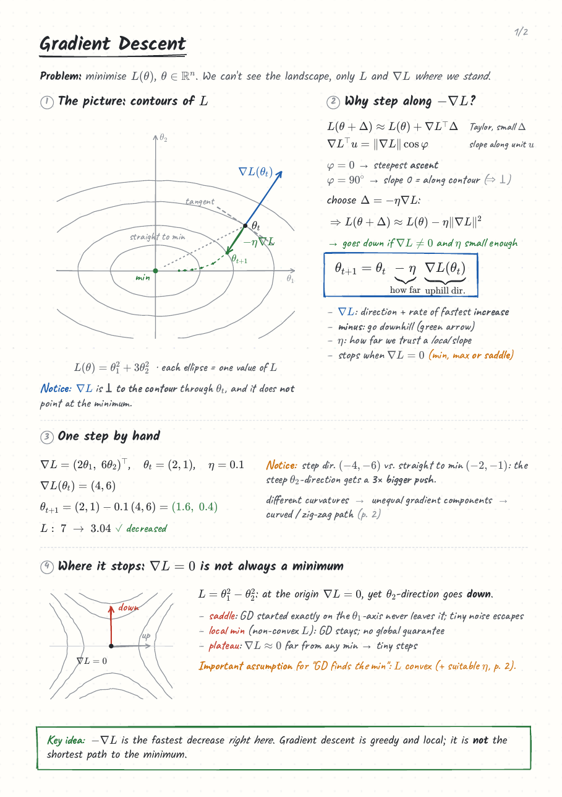
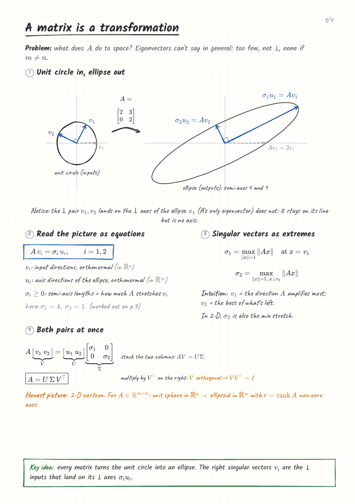
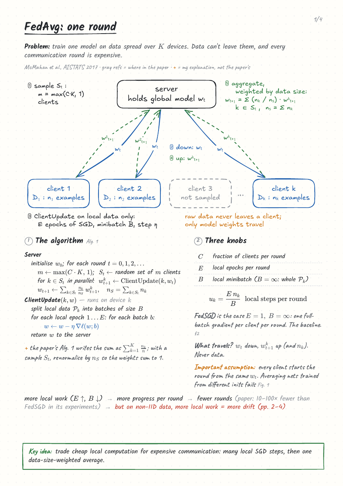

Notes you can rebuild a concept from, weeks later. Visual Learning Notes makes Claude take notes like the sharpest student in an excellent lecture: compact, visual, mathematically meaningful, and easy to copy by hand.
An open-source skill for Claude Code and Claude.ai. Give it lecture slides, a PDF, a paper, or just a topic.
Notes it made open them, print them, copy them

Gradient DescentThe contour picture, why −∇L, one step by hand, the 2/a step-size limit derived, and the κ zig-zag.
notesPDFblueprint

Singular Value DecompositionA matrix as rotate, stretch, rotate: the circle-to-ellipse picture, what U, Σ and V do, and a 2×2 example you can check by hand.
notesPDFblueprint

Federated AveragingThe server–client round, the nk/n-weighted update, and why non-IID clients drift, worked out with two clients.
notesPDFblueprint
What you get
A handwriting blueprintPage by page, it gives the title, the layout, what to draw and how big, the equations, the annotations, what must not be left out, and how long it takes to copy. Then 3–5 understanding questions and a short Remember list.
Printable A4 pagesInk on dotted paper, hand-drawn diagrams with real coordinates, and KaTeX math. Rendered to a vector PDF and checked for overflow, broken math, and overlapping labels.
Excalidraw diagramsNative .excalidraw files for architectures, flows, and concept maps. Each one is verified with Excalidraw's own renderer, so it opens and stays editable.
The rules it follows
Every element earns its placeIf removing something costs no understanding, it goes. If a drawing would make an idea much easier, it gets drawn.
Problem firstOne line on what we're solving and why the obvious approach fails. No motivational essays.
Picture before equationThe drawing and the equation explain each other. The minus sign in the update rule is the green arrow.
Derivations keptThe intermediate steps that carry ideas, each with a short reason in the margin.
Relationships, not factsCause → effect chains, side-by-side comparisons, and before/after pictures, instead of five disconnected definitions.
Copyable by hand1–3 diagrams and 3–8 equations per page, about 20 minutes to copy, and nothing a pen can't draw.
Colour means somethingBlue for math objects, red for failure, green for what works, orange for assumptions. It survives grayscale.
HonestAssumptions and failure modes stay on the page. In lecture mode, its own additions are marked +, never put in the lecturer's mouth.
Two modes, three densities
Lecture companion. Give it slides, a PDF chapter, screenshots, or a transcript. It keeps the lecturer's notation and order, compresses ten bullets into the one idea behind them, adds missing intuition (marked +), and flags errors in the source instead of silently fixing them.
Concept explorer. Give it a topic, an equation, an algorithm, or a paper. It builds the concept's structure first (problem, mechanism, key insight, assumptions, failure modes), then designs the pages.
Concept map (the structure on one page) · Learning notes (the default: intuition, math, derivations, examples) · Revision sheet (only the essentials, before an exam).
Install
/plugin marketplace add mahdi13830510/visual-learning-notes
/plugin install visual-learning-notes@visual-learning-notes
Or as a plain skill: git clone https://github.com/mahdi13830510/visual-learning-notes ~/.claude/skills/visual-learning-notes
Then: /visual-learning-notes make notes on the attention mechanism, or attach your lecture slides and ask for notes. For Claude.ai, upload visual-learning-notes.zip under Settings → Capabilities → Skills.